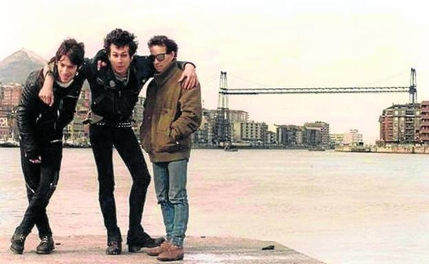

DidaktikApp

Eskorbuto
Y bueno… pues este es el mural, como bien habéis visto en el puzzle. ¿Sabéis qué es lo que no habréis podido ver
en el puzzle? Mira… mira acercaros un poco más al mural. Un poco más… El mural está hecho con trozos de baldosa.
Bueno eso era solo para que supierais.A lo que vamos, Eskorbuto fue un grupo de punk nacido aquí en Santurtzi. Se
creó hace muchos años y ha sido una de las bandas más importantes de punk en Europa. Por otra parte, la banda fue
una de las más conocidas del "rock radical vasco". Por eso, a día de hoy, Eskorbuto es un orgullo para el pueblo,
sobre todo para la generación de vuestros padres y madres.